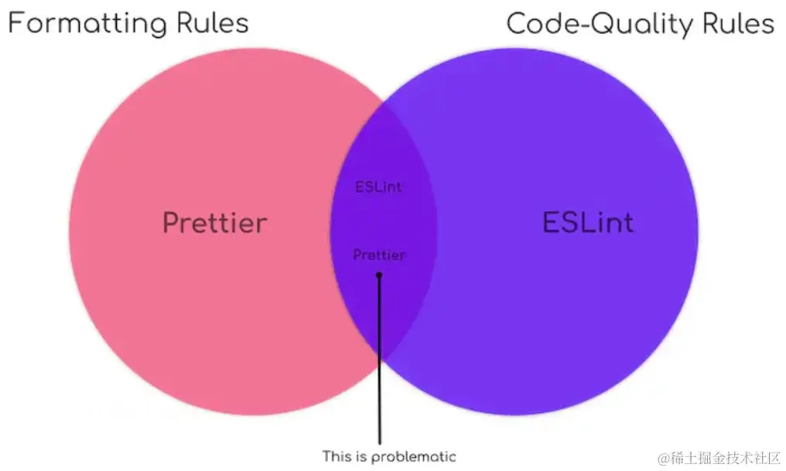
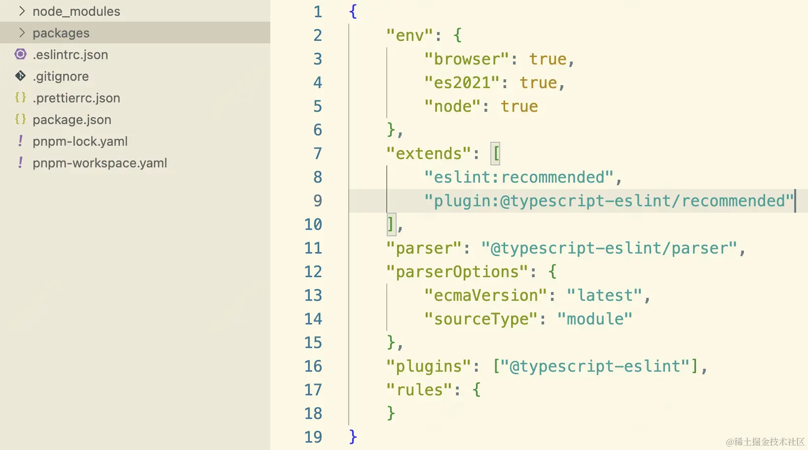
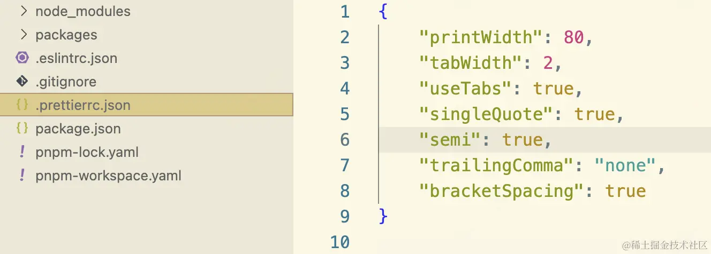

统一的前端开发规范，可有助于代码质量提升与团队协作效率提高。通常做法是 eslint 与 prettier 的配合进行实现。
代码风格部分会冲突，我们会对冲突部分进行处理

npm i eslint -D
npm init @eslint/config
按照提示完成初始配置，生成.eslintrc.json配置文件

npx eslint . --fix
插件安装后，修改 vscode 配置文件 setting.json
{
//...
"editor.formatOnSave": true,
"editor.defaultFormatter": "esbenp.prettier-vscode"
}
eslint 的代码格式做的不够彻底，需要 prettier 进行增强。并且 prettier 支持更多的文件格式的格式化。
npm i prettier -D
配置.prettierrc.json

npx prettier --write.
插件安装后，修改 vscode 配置文件 setting.json
{
//...
"editor.formatOnSave": true,
"editor.defaultFormatter": "esbenp.prettier-vscode"
}
在进行上述配置后，vscode 中保存后，出现风格规则不一致，eslint 报错问题，现在来解决冲突
使用eslint-config-prettier这个规则集，关闭 eslint 和 prettier 冲突的规则设置
npm i eslint-config-prettier -D
在.eslintrc.json加入perttier规则集
{
"extends": [
"eslint:recommended",
"plugin:@typescript-eslint/recommended",
"prettier" // 覆盖eslint格式配置,写在最后
]
}
使用eslint-plugin-prettier这个插件
npm i eslint-plugin-prettier -D
在.eslintrc.json加入perttier插件
{
"plugins": ["@typescript-eslint", "prettier"], // 注册插件
"rules": {
"prettier/perttier": "error" // 加入prettier规则
}
}
{
"extends": ["plugin:prettier/recommended"]
}
而plugin:prettier/recommended帮我们做了如下事情：
{
"extends": ["prettier"], // 使用eslinst-config-prettier中的配置项
"plugins": ["prettier"], // 注册该prettier插件
"rules": {
"prettier/prettier": "error", // 在eslint中运行prettier，并启用该插件提供的规则
"arrow-body-style": "off", // 关闭规则
"prefer-arrow-callback": "off" // 关闭规则
}
}
eslint 和 prettier 配置使用需要进行如下操作：
npm install --save-dev eslint prettier eslint-config-prettier eslint-plugin-prettier
// .eslintrc.json
{
"extends": ["plugin:prettier/recommended"]
}
// .prettierrc.json
{
"singleQuote": true // 根据需要配置
}